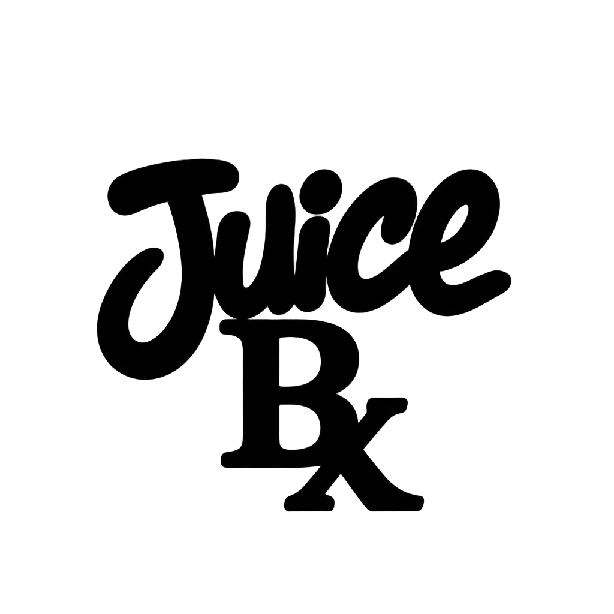

🧃 JuiceBx
The Juice Box. Where you get the juice from.
Open
Creations
on your Rabbit r1, point the camera at this QR code, and tap to install
JuiceBx
directly to your device deck.
🕊️ 999 Forever • Jarad Anthony Higgins 🕊️